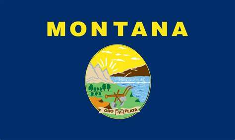

About Me
Born in Helena, Montana on July 16th, 2003, I grew up just outside of East Helena. My parents are Stormy and Scott Flinders. Growing up in Montana, I found the wonders of nature and I enjoy anything and everything that gets me into Montana's beautiful landscape. This includes skiing, hunting, golfing, camping, fishing, hiking, and offroading. That doesn't list all of my hobbies but it is a good start.
For schooling I went I went to Montana City School for K-8th grade and the Helena High School where I finished with honors. After High School I took two gap years to gain some work experience and figure out what I wanted to do. Now I'm a student at Helena College pursuing an Associates of Applied Science in Software Development. I pride my self in my work ethic and curiosity to learn.